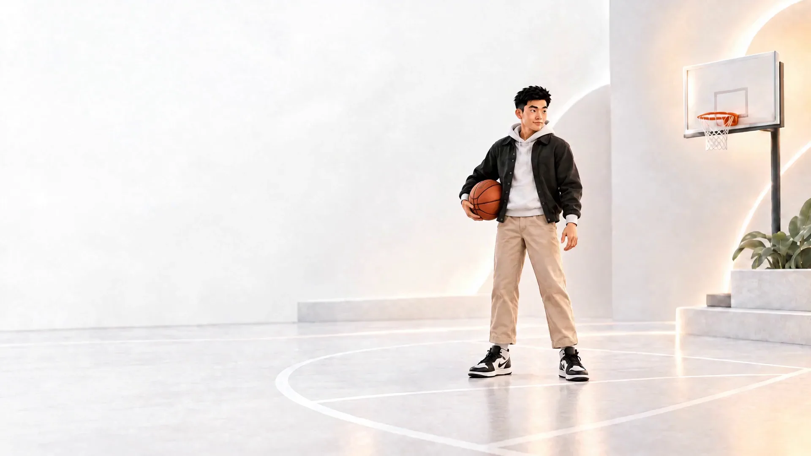

UX / Product Designer · Playground
Room to
explore.
An interactive corner of my portfolio. Explore the studio, try a move, and follow your curiosity.

Interactive playground
Preparing the playground
WASD/arrows run · tap floor · E/Q/Space · Shift+arrows aim